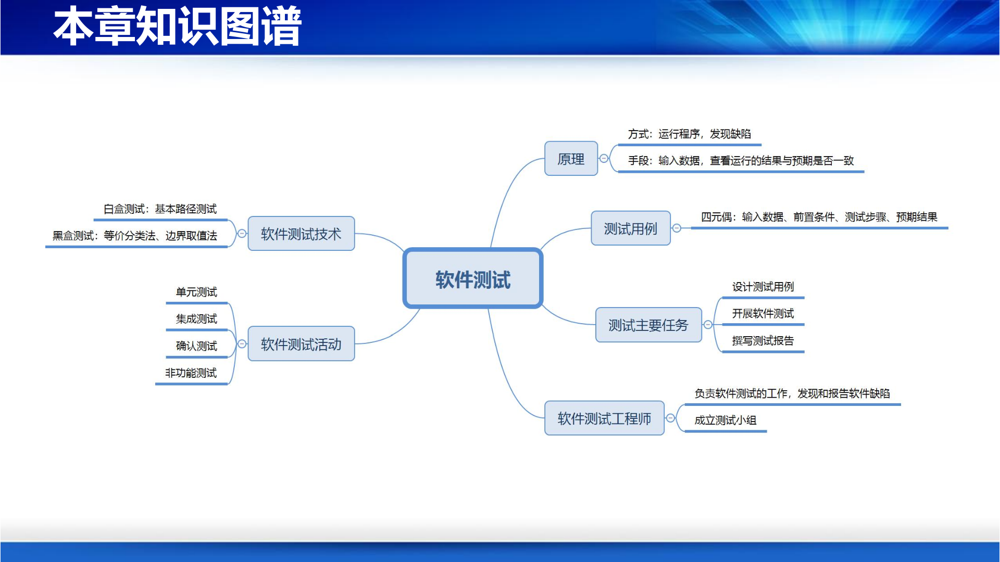
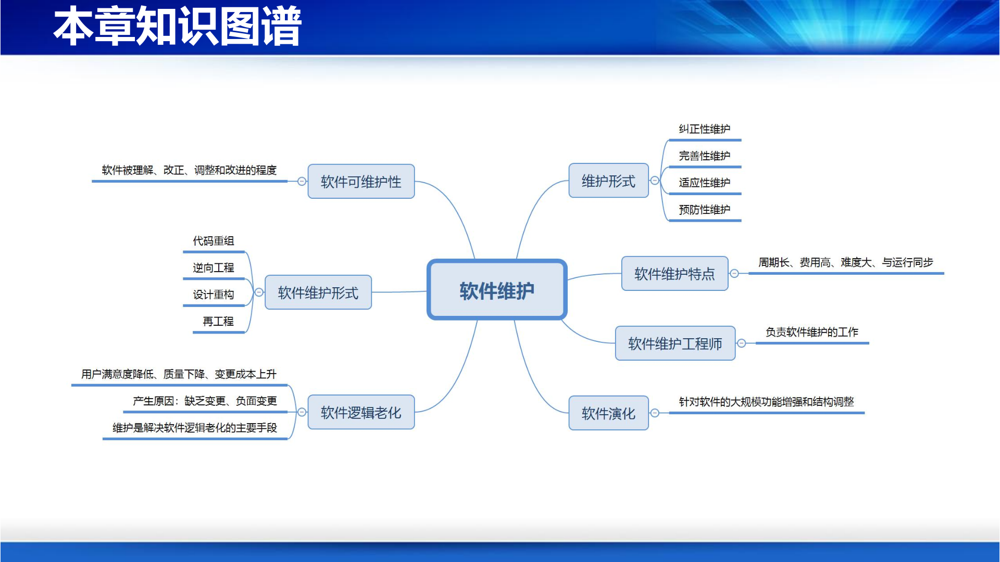

第10-11讲：软件测试与维护
一、知识点讲解
6.1 软件测试
本章知识图谱

1. 软件测试概述
1.1 软件缺陷的来源
软件缺陷（Defect/Bug）可能来源于软件开发的各个阶段：
- 需求阶段：没有正确描述用户需求、没有准确描述需求等。
- 设计阶段：没有正确实现软件需求、软件设计本身存在问题等。
- 编码阶段：代码没有正确实现功能、代码编写不正确等。
需求、设计中的缺陷往往会传递到代码中，编码过程中也会引入新的问题，最终都反映在程序代码上。因此，程序代码是软件缺陷的重要载体，而文档、模型等制品中同样可能存在缺陷。
1.2 软件缺陷的危害
软件缺陷可能带来严重后果：
- 无法满足要求：软件不能完成用户期望的功能。
- 不能正常工作：系统出现崩溃、无响应等问题。
- 引发安全事故：例如波音 737 MAX 事件，因软件参数屏显范围等问题导致安全隐患。
- 产生经济损失：例如战斗机某参数屏显范围原为 ±100，重用于新机型应为 ±300，软件复用不当会造成重大损失。
因此，尽可能减少软件缺陷非常重要。
1.3 软件缺陷不可避免
软件缺陷不可避免，主要原因包括：
- 人总是会犯错误：软件工程师、用户等在软件开发和使用过程中都可能引入错误。
- 软件系统太复杂：现代软件规模庞大、模块众多、交互复杂。
- 缺陷来源多：需求、设计、编码等活动，以及模型、文档、程序等制品都可能存在缺陷。
- 缺陷常态化：对于复杂软件系统，缺陷不可避免，很难做到完全无缺陷。
1.4 何为软件测试
软件测试是运行软件或模拟软件的执行，从而发现软件缺陷的过程。
注意点：
- 软件测试通过运行程序代码来发现缺陷，这与代码走查、静态分析等方法形成鲜明对比。
- 软件测试的目的是发现缺陷，它只负责发现缺陷，不负责修复和纠正缺陷。
- 测试是“找错”的过程，而不是“证明无错”的过程。
1.5 软件测试的原理
软件测试的基本前提是：程序本质上是对数据的处理。
测试方法思路：
$$
\text{设计数据（测试用例）} \Rightarrow \text{运行测试用例（程序处理数据）} \Rightarrow \text{判断运行结果是否符合预期}
$$
为软件测试而专门设计的数据称为测试用例（Test Case）。测试用例通常表示为一个二元组或四元组。
1.6 测试用例的组成
一个完整的测试用例可视为四元组：
$$
(\text{输入数据},\ \text{前置条件},\ \text{测试步骤},\ \text{预期输出})
$$
各组成部分含义：
- 输入数据：交由待测试程序代码进行处理的数据。
- 前置条件：程序处理输入数据的运行上下文，即要满足的前置条件。
- 测试步骤：程序代码对输入数据的处理可能涉及的一系列步骤，某些步骤需要用户的进一步输入。
- 预期输出：程序代码的预期输出结果。
例如，对于加法功能 $A = B + C$：
- 测试数据：$B=1, C=2$
- 预期结果：$A=3$
1.7 软件测试的任务与目的
任务：给定待测试的程序代码和测试用例，通过运行程序发现其中潜藏的软件缺陷，并生成软件缺陷报告。
目的：
- 发现软件中的缺陷。
- 最大限度、尽可能多地找到缺陷。
功效：发现的缺陷越多，软件中遗留的缺陷越少，交付的软件质量越高，后期维护工作量也越少。
思考与讨论：软件测试没有发现缺陷是否意味着软件就没有缺陷？否，测试只能证明缺陷存在，不能证明缺陷不存在。由于测试用例不可能穷举所有输入和路径，未被发现的缺陷仍可能存在。
1.8 软件测试的步骤
软件测试一般包括以下步骤：
- 明确待测试对象：确定测试的粒度，如模块、子系统或整个系统。
- 设计测试用例：构造测试数据及预期结果，可能有很多个用例。
- 运行代码和测试用例：将输入数据交给程序处理。
- 分析运行结果：对比实际结果与预期结果，发现缺陷。
1.9 软件测试面临的主要挑战
- 设计测试用例：
- C1：如何设计有效的测试用例，提高软件测试质量？
- C2：如何确保测试用例的合理性，尽可能发现缺陷？
- 发现程序缺陷：
- C3：如何运行程序和用例来发现软件缺陷？
- C4：如何采用工具来自动发现缺陷，提高测试效率？
软件测试的前提和关键是设计出有效的测试用例。
1.10 软件测试工程师
软件测试工程师负责软件系统的测试工作，主要职责包括：
- 发现软件系统中的缺陷。
- 协助软件开发工程师定位和修复缺陷。
- 服务于软件开发工程师，帮助他们理解和解决软件中的缺陷。
- 充当客户的技术代表，通过测试演练客户验收。
2. 软件测试的过程与策略
2.1 程序构成及其缺陷的潜在位置
程序的缺陷可能隐藏在多个层次：
- 程序模块内部：模块内部的逻辑、数据结构等。
- 程序模块接口：模块之间的调用接口。
- 程序模块间的交互：多个模块协同工作时的行为。
- 整个软件系统：系统级功能、性能、安全性等。
因此，需要对软件进行系统性、全方位的测试。
2.2 软件测试活动与开发过程的关系
软件测试活动与软件开发过程相对应：
| 软件开发过程 |
软件测试过程 |
| 需求分析 |
确认测试 |
| 概要设计 |
集成测试 |
| 详细设计 |
单元测试 |
| 编码 |
— |
2.3 软件测试活动之间的关系
软件测试活动通常按照以下层次循序渐进、逐层递进地开展：
$$
\text{单元测试} \rightarrow \text{集成测试} \rightarrow \text{确认测试} \rightarrow \text{其他测试（性能、安全、强度等）}
$$
2.4 软件测试过程
典型的软件测试过程包括：
- 制订软件测试计划。
- 代码检查/走查。
- 单元测试。
- 集成测试。
- 确认测试。
- 出现软件失效时，调试程序、修复程序。
- 回归测试。
- 评价测试效果。
2.5 单元测试
测试对象：对软件基本模块单元进行测试，如过程、函数、方法、类。
测试方法：大多采用白盒测试技术。
测试内容：
- 模块接口测试。
- 模块局部数据结构测试。
- 模块独立执行路径测试。
- 模块错误处理通道测试。
- 模块边界条件测试。
实施时机：在软件详细设计阶段就需要设计单元测试用例并制定单元测试计划；代码写完后开展测试。
运行环境：单元测试通常需要驱动程序和桩模块。
- 驱动程序：产生测试用例、执行测试程序、生成测试报告。
- 桩模块：模拟被测模块所调用的下级模块。
2.6 集成测试
测试对象：对软件模块之间的接口进行测试，如过程调用、函数调用、消息传递、远程过程调用。
测试技术：采用黑盒测试技术。
测试内容：过程调用、函数调用、消息传递、远程过程调用、网络消息等。
集成方法：
- 自顶向下集成：以主控模块作为测试驱动模块，按深度优先或广度优先策略逐步用实际模块替换桩模块；每集成一个模块立即测试，并进行回归测试。
- 自底向上集成：把低层模块集成起来形成模块群（cluster），开发驱动模块进行测试，然后用高层模块替换驱动模块，逐步形成更大的模块群。
实施时机：在概要设计阶段就需要设计集成测试用例并制定集成测试计划。
2.7 确认测试
测试对象：对软件的功能和性能进行测试，判断目标软件系统是否满足用户需求。
依据和标准：软件需求规格说明书（SRS）。
测试技术：采用黑盒测试技术。
实施时机：在需求分析阶段就需要设计确认测试用例并制定确认测试计划。
α 测试和 β 测试：
- α 测试：软件开发公司组织内部人员模拟各类用户行为，对即将面市的软件产品（α 版本、内部测试版）进行测试，发现错误并修正。α 测试尽可能逼真地模拟实际运行环境和用户操作。
- β 测试：经 α 测试并修改后的软件产品称为 β 版本（外部测试版）。软件开发公司组织各方面的典型用户在实际工作中使用 β 版本，并要求用户报告异常情况、提出批评意见。β 测试是在开发者无法控制的环境下进行的软件现场应用。
2.8 面向对象软件测试
面向对象（OO）软件与传统结构化程序不同，其测试需特别关注：
- 数据和方法的隐藏与封装。
- 继承、多态等机制。
- 对象之间的交互与集成。
类测试的前提：
- 需要开发测试驱动程序：创建类实例、运行测试用例、向对象发送消息。
- 根据响应的值和对象状态判断是否有缺陷。
- 类方法的测试可采用白盒测试方法。
类方法测试过程：
- 设置测试消息的参数、全局变量为希望的取值。
- 设置被测对象为希望的状态（设置属性值）。
- 从测试驱动程序向被测对象实例发送测试消息。
- 测试检查：
- 比较返回值与期望值；
- 比较对象状态与期望状态；
- 捕获所有异常，判断是否为期望异常；
- 必要时比较全局变量结果。
- 如发生未通过，诊断和修正问题。
交互测试的前提：
- 实例化参与交互的类实例。
- 发送消息序列。
- 判断交互完成后的输出以及交互过程中各个对象的状态。
- 注意事项：消息内容、消息次序、正常/不正常消息序列。
继承的测试：可以先测试父类，再测试子类；重用父类的测试用例进行子类测试。
2.9 非功能性测试
对于人机物三元融合系统而言，非功能测试非常重要，主要包括：
- 性能测试：测试软件系统在正常使用时是否能够达到一定性能指标。
- 强度测试：对系统不断施加更大的压力和使用强度，确定系统瓶颈或不可接受的性能点，获得系统能提供的最大服务能力。
- 配置和兼容性测试。
- 安全性测试：设计测试用例暴露软件安全漏洞。
- 可靠性测试。
- 用户界面测试（易用性测试）：测试界面是否易于使用、实用。
- 本地化测试。
- Web 测试：文本、超链接、图片视频、表单等。
- 安装测试。
性能测试用例示例（12306）：
- 用例标识：12306-NSF-1
- 测试项：12306 软件的性能能否支持同时有 10000 个用户登录使用，并且平均响应时间少于 1 秒。
- 测试输入：由模拟软件模拟 10000 个用户使用系统。
- 前提条件：APP 和服务器软件已完成并安装成功。
- 环境要求：n 台服务器、20 台客户机、模拟软件、网络通畅。
- 测试步骤：启动服务器→模拟用户登录并查询→记录请求和响应时间→处理日志。
- 预期输出：每个模拟用户都得到正确服务，平均响应时间小于 1 秒。
强度测试与性能测试的区别：
- 性能测试关注正常使用下的性能指标（如 500 个用户同时使用）。
- 强度测试关注极限压力（如上千甚至上万用户同时使用），以判断系统能承受的最大强度。
安全性测试过程：
- 明确潜在安全隐患及可能入侵者角色。
- 明确潜在入侵行为及时机（如事务初始化、系统输入、存储检索等）。
- 列出每种隐患可能遭到的入侵行为及其可能性。
- 确定风险较高的入侵点。
- 按风险顺序设计测试用例实施安全性测试。
Web 测试需要测试的对象：文本、超链接、图片和视频、表单、窗口缩放后的格式等。
2.10 软件测试的后续工作
软件测试发现缺陷后，后续工作包括：
- 调试（Debugging）：定位缺陷原因。
- 排错/修复：纠正错误。
- 回归测试（Regression Testing）：修改程序可能引入新的错误，因此需要重新运行测试用例，验证软件新版本是否从正常状态退化到不正常状态。回归测试最好能够自动化，单元测试是回归测试的基础。
测试、调试和排错的区别：
| 活动 |
目的 |
执行人员 |
| 测试 |
发现缺陷 |
独立测试小组 |
| 调试 |
定位缺陷 |
开发人员 |
| 排错 |
纠正错误 |
开发人员 |
2.11 软件测试的重要性和原则
重要性：
- 软件测试是软件质量保证活动中的关键步骤。
- 是对 SRS、设计规格说明书以及编码的最后复审。
- 工作量往往占软件开发总工作量的 40% 以上。
- 是确保软件质量的有效和可操作的重要手段。
特殊性：
- 软件是逻辑产品。
- 软件具有复杂性。
- 软件缺陷具有隐蔽性。
软件测试原则：
- 测试应该有计划，在开发初期就应制定测试计划。
- 所有的测试都应该追溯到用户需求。
- 将 Pareto 原则应用于软件测试：80% 的错误可能集中在约 20% 的模块中。
- 测试应该从“微观”开始，逐步转向“宏观”。
- 穷举测试是不可能的。
- 每个测试用例都必须定义预期的输出或结果。
- 尽量避免程序的开发人员测试自己编写的代码。
- 尽量避免程序开发组织测试自己开发的程序。
- 应详细检查每次测试的结果。
- 测试用例中不仅要说明合法有效的输入条件，还应描述不期望的、非法的输入条件。
- 检查程序没有完成希望它做的事情只是测试的一半，还应检查程序是否执行了不希望它做的事情。
- 避免随意舍弃任何测试用例，即使非常简单的测试用例。
- 不应在事先假设不会发现错误的情况下来制定测试计划。
- 一个程序模块存在更多错误的可能性与该模块已发现的错误数量成正比。
- 测试是一个具有相当创新性和智力挑战的活动。
3. 软件测试技术
3.1 程序单元测试
测试对象：程序单元，即基本模块单元、基本类方法、函数和过程。
测试内容：
测试依据：设计文档（如程序流程图）。
例如，用户注册模块的设计流程图包括：获取用户 ID 和密码、分析 ID 合法性（数字和字符组合、不与已有重复）、分析密码合法性（数字和字符组合、不少于 4 个字符）、写入数据库等。
3.2 白盒测试
思想：根据程序单元内部工作流程来设计测试用例；运行待测试程序，检验程序是否按内部工作流程运行，如果不是则存在缺陷。
特点：必须了解程序的内部工作流程才能设计测试用例。
覆盖准则：
- 语句覆盖：每个语句至少执行一次。
- 分支覆盖：每个判定的真、假分支至少执行一次。
- 路径覆盖：覆盖程序中所有可能的执行路径。
- 基本路径覆盖：覆盖程序中的基本路径集合。
注意：程序的路径可能有无穷条，但基本路径只有有限条，基本路径测试可实现对基本路径的测试覆盖。
3.2.1 基本路径测试步骤
步骤 1：根据程序逻辑画出流程图
例如，对如下程序：
void Func(int nPosX, int nPosY) {
while (nPosX > 0) {
int nSum = nPosX + nPosY;
if (nSum > 1) {
nPosX--;
nPosY--;
} else {
if (nSum < -1) nPosX -= 2;
else nPosX -= 4;
}
}
}
先画出对应的程序流程图（注意流程图的正确画法）。
步骤 2：将流程图转换为流图
流图刻画程序控制结构，但不涉及程序过程性细节。流图节点包括：
- 过程块：顺序执行的语句序列。
- 结合点：多条控制流汇合处。
- 判定点：条件判断处。
如果判定条件包含复合条件（如 a or b），需要拆分为多个单一判定点。
步骤 3：确定基本路径集合
基本路径数量由流图的 Cyclomatic 复杂度决定：
$$
V(G) = E - N + 2
$$
其中 $$
(\text{输入数据},\ \text{前置条件},\ \text{测试步骤},\ \text{预期输出})
$$0 为流图边数，$$
(\text{输入数据},\ \text{前置条件},\ \text{测试步骤},\ \text{预期输出})
$$1 为流图节点数。
对 Func 示例，流图 $$
(\text{输入数据},\ \text{前置条件},\ \text{测试步骤},\ \text{预期输出})
$$2，即有 4 条基本路径：
- $$
(\text{输入数据},\ \text{前置条件},\ \text{测试步骤},\ \text{预期输出})
$$3（不进入 while 循环）
- $$
(\text{输入数据},\ \text{前置条件},\ \text{测试步骤},\ \text{预期输出})
$$4（进入 while，$$
(\text{输入数据},\ \text{前置条件},\ \text{测试步骤},\ \text{预期输出})
$$5 分支）
- $$
(\text{输入数据},\ \text{前置条件},\ \text{测试步骤},\ \text{预期输出})
$$6（进入 while，$$
(\text{输入数据},\ \text{前置条件},\ \text{测试步骤},\ \text{预期输出})
$$7 且 $$
(\text{输入数据},\ \text{前置条件},\ \text{测试步骤},\ \text{预期输出})
$$8 分支）
- $$
(\text{输入数据},\ \text{前置条件},\ \text{测试步骤},\ \text{预期输出})
$$9（进入 while，$$
\text{单元测试} \rightarrow \text{集成测试} \rightarrow \text{确认测试} \rightarrow \text{其他测试（性能、安全、强度等）}
$$0 且 $$
\text{单元测试} \rightarrow \text{集成测试} \rightarrow \text{确认测试} \rightarrow \text{其他测试（性能、安全、强度等）}
$$1 分支）
步骤 4：根据基本路径设计测试用例
| 基本路径 |
输入 $$
\text{单元测试} \rightarrow \text{集成测试} \rightarrow \text{确认测试} \rightarrow \text{其他测试（性能、安全、强度等）}
$$2 |
预期执行路径 |
| 1-11 |
$$
\text{单元测试} \rightarrow \text{集成测试} \rightarrow \text{确认测试} \rightarrow \text{其他测试（性能、安全、强度等）}
$$3 |
不进入循环 |
| 1-2,3-4,5-10-1-11 |
$$
\text{单元测试} \rightarrow \text{集成测试} \rightarrow \text{确认测试} \rightarrow \text{其他测试（性能、安全、强度等）}
$$4 |
$$
\text{单元测试} \rightarrow \text{集成测试} \rightarrow \text{确认测试} \rightarrow \text{其他测试（性能、安全、强度等）}
$$5，走 then 分支 |
| 1-2,3-6-7-9-10-1-11 |
$$
\text{单元测试} \rightarrow \text{集成测试} \rightarrow \text{确认测试} \rightarrow \text{其他测试（性能、安全、强度等）}
$$6 |
$$
\text{单元测试} \rightarrow \text{集成测试} \rightarrow \text{确认测试} \rightarrow \text{其他测试（性能、安全、强度等）}
$$7，走 else 中 $$
\text{单元测试} \rightarrow \text{集成测试} \rightarrow \text{确认测试} \rightarrow \text{其他测试（性能、安全、强度等）}
$$8 分支 |
| 1-2,3-6-8-9-10-1-11 |
$$
\text{单元测试} \rightarrow \text{集成测试} \rightarrow \text{确认测试} \rightarrow \text{其他测试（性能、安全、强度等）}
$$9 |
$$
V(G) = E - N + 2
$$0，走 else 中 $$
V(G) = E - N + 2
$$1 分支 |
步骤 5：运行程序检验测试用例
运行待测试程序代码，逐个输入测试用例，分析程序运行路径。如果运行路径与期望路径不同，则存在缺陷。
3.3 测试用例描述与单元测试工具
测试用例描述内容：
- 用例标识：唯一标识。
- 用例开发者、开发日期。
- 测试项：被测试的具体特征、代码模块等。
- 测试输入。
- 前提条件。
- 环境要求。
- 测试步骤。
- 预期输出。
- 用例间的依赖性。
常用单元测试工具：
- C/C++：C++Test、Cunit、CppTest。
- .Net：Nunit。
- Java：JUnit。
- Python：PyUnit。
JUnit 常用 Assert 方法：
assertArrayEquals：判断两个数组是否相等。assertEquals：判断两个对象是否相等。assertFalse / assertTrue：判断布尔变量。assertNotNull / assertNull：判断对象是否为空。assertNotSame：判断两个引用是否指向同一对象。Fail：让测试用例失败。
单元测试基本原则：
- 由程序设计人员（代码编写者）完成。
- 在基本功能/参数上验证程序正确性。
- 产生可重复、一致的结果。
- 具有独立性。
- 覆盖所有代码路径。
- 集成到自动测试框架中。
- 必须和产品代码一起保存和维护。
3.4 黑盒测试
思想：根据已知的程序功能和性能（而非内部细节）设计测试用例，通过测试检验程序的每个功能和性能是否正常。
依据：程序的功能和性能描述。
特点：只清楚模块的外在功能，不清楚其内部控制逻辑和算法；与软件实现无关，实现变化后测试用例通常仍可用；可与软件实现并行开发。
黑盒测试发现的缺陷类型：
- 不正确或遗漏的功能。
- 模块接口错误。
- 数据结构或外部数据库访问错误。
- 性能错误。
- 初始化和终止条件错误。
3.4.1 等价分类法
思想：把程序输入数据集合按输入条件划分为若干等价类，每个等价类中的数据具有相同测试特征；每个等价类设计一个测试用例。
等价类划分原则：
| 输入条件 |
等价类划分 |
| 一个范围 $$
V(G) = E - N + 2
$$2 |
有效类（范围内）、大于最大值、小于最小值 |
| 一个特定值 |
有效、大于、小于 |
| 一个集合 |
有效（在集合内）、无效（在集合外） |
| 一个布尔量 |
有效（布尔量成立）、无效（布尔量不成立） |
示例：$$
V(G) = E - N + 2
$$3，当 $$
V(G) = E - N + 2
$$4 且 $$
V(G) = E - N + 2
$$5 时，$$
V(G) = E - N + 2
$$6；否则 $$
V(G) = E - N + 2
$$7。
关于 $$
V(G) = E - N + 2
$$8 的等价类：$$
V(G) = E - N + 2
$$9、$$
M = P + K \cdot e^{(c-d)}
$$0、$$
M = P + K \cdot e^{(c-d)}
$$1。
关于 $$
M = P + K \cdot e^{(c-d)}
$$2 的等价类：$$
M = P + K \cdot e^{(c-d)}
$$3、$$
M = P + K \cdot e^{(c-d)}
$$4、$$
M = P + K \cdot e^{(c-d)}
$$5。
可设计 9 个测试用例覆盖这些等价类组合。
3.4.2 边界值分析法
思想：软件更容易在输入边界上出现错误，因此重点选取边界及其邻近值作为测试用例。
原则：
- 输入条件是范围 $$
M = P + K \cdot e^{(c-d)}
$$6：选取 $$
M = P + K \cdot e^{(c-d)}
$$7、$$
M = P + K \cdot e^{(c-d)}
$$8 以及紧挨 $$
M = P + K \cdot e^{(c-d)}
$$9 左右、$$
V(G) = E - N + 2
$$0 左右的值。
- 输入条件是一组数：选取最大、最小、次大、次小者。
- 程序内部数据结构有界：设计用例检查该数据结构的边界。
对上例 $$
V(G) = E - N + 2
$$1，边界值用例可包括：
- 关于 $$
V(G) = E - N + 2
$$2：$$
V(G) = E - N + 2
$$3 和 $$
V(G) = E - N + 2
$$4。
- 关于 $$
V(G) = E - N + 2
$$5：$$
V(G) = E - N + 2
$$6。
组合后可形成 18 个测试用例（$$
V(G) = E - N + 2
$$7）。
3.5 基于 CASE 与大模型的软件测试
- 基于 CASE 的软件测试：利用测试数据产生器、运行测试程序、产生测试报告等工具支持测试。
- 基于大模型的软件测试：利用大模型自动生成测试用例、自动生成测试代码。例如基于 ChatGPT 可生成包含目的、步骤、预期结果的测试用例，并考虑边界条件和异常情况。
4. 软件测试计划及输出
4.1 成立软件测试组织
软件测试是一项独立性工作，应成立单独的软件测试小组：
- 成员由软件测试工程师组成。
- 不受软件开发小组管理，确保独立性和客观性。
- 应在软件开发早期成立，以便尽早介入，开展培训、了解项目、掌握需求、制定测试计划。
4.2 制定和实施软件测试计划
软件测试计划通常包括以下内容：
- 标识符：标识本测试计划。
- 简介：对象、目标、策略、过程、进程。
- 测试项：接受测试的软件元素。
- 待测软件特征：接受测试的软件特征（如需求）。
- 免测软件特征：无需测试的特征。
- 测试策略和手段：测试策略与方法。
- 测试项成败标准：每个测试项通过测试的标准。
- 测试暂停/停止标准：暂停或停止测试的依据。
- 测试交付物：测试过程中或完成后应交付的制品。
- 测试任务：主要任务描述。
- 测试环境：所需软硬件环境。
- 职责：每项任务的负责人或团队。
- 进度安排：测试过程及时间安排。
- 成本预算：估算测试成本。
- 风险与意外：可能存在的风险和意外。
4.3 软件测试的输出
软件测试的主要输出包括：
- 软件测试计划：描述测试的整体规划。
- 软件测试报告：记录测试情况及发现的缺陷，包括：
- 软件单元测试报告。
- 软件集成测试报告。
- 软件确认测试报告。
- 系统测试报告等。
7.1 软件维护与演化
本章知识图谱

1. 软件维护与演化概述
1.1 软件也需要维护
软件在交付使用后，由于以下原因需要进行维护：
- 出现故障，需要纠正：潜在缺陷产生软件错误，需纠正。
- 需求变化，需要升级：用户要求增强功能。
- 环境变化，需要适应：硬件、操作系统、网络等环境变化。
- 系统脆弱，需要改善：软件在持续维护中变得脆弱，需要改善设计。
1.2 软件维护的定义
软件维护是指软件在交付使用后，由于应用需求和环境变化以及自身问题，对软件系统进行改造和调整的过程。
1.3 软件维护的形式
软件维护一般分为四种形式：
| 维护类型 |
定义 |
起因 |
目的 |
| 纠正性维护 |
纠正软件中的缺陷和错误 |
用户发现缺陷后提出请求 |
诊断和改正潜藏缺陷 |
| 适应性维护 |
改造软件以适应新的运行环境和平台 |
运行环境发生变化 |
适应环境变化和发展 |
| 完善性维护 |
增加新功能、修改已有功能 |
用户要求功能增强或改进 |
满足用户日益增长的需求 |
| 预防性维护 |
改造软件结构以提高可靠性和可维护性 |
为进一步改善可维护性、可靠性，为后续改进奠定基础 |
重新改善软件结构 |
1.4 软件维护的特点
- 同步性：维护与使用同步进行。
- 周期长：软件可能服役十几年甚至几十年。
- 费用高：维护成本可高达总成本的 80% 以上，维护费用是开发费用的 3 倍以上。
- 难度大：需充分理解待维护软件的架构、设计和代码；设计文档缺失时尤其困难；50%~90% 的时间消耗在理解程序上。
1.5 软件维护工程师
软件维护工程师需要具备多方面的能力和素质：
- 阅读理解能力：阅读文档和代码，掌握软件架构和设计。
- 掌握新技术能力：指导软件维护。
- 洞察和分析能力：根据缺陷症状快速定位缺陷，针对增强需求明确重设计部分。
- 沟通能力：与客户、用户和软件工程师沟通。
1.6 软件演化及其特点
软件演化是指针对软件的大规模功能增强和结构调整，以实现变化的软件需求或提高软件系统质量。
特点：
- 功能增强粒度大：针对粗粒度需求变化及功能增强。
- 主动应对变更：基于对用户需求及其变化的理解，规划软件整体演化。
- 持续性：预先规划演化路线图，连续进入下一项演化工作。
- 引发版本变化：每次演化结束后通常产生新版本。
软件演化 vs 软件维护：
| 概念 |
功能增强粒度 |
应对变化方式 |
持续性/间隔性 |
版本变化 |
| 软件演化 |
粗粒度 |
主动 |
持续性 |
是 |
| 软件维护 |
细粒度 |
被动 |
间隔性 |
不一定 |
1.7 软件演化法则
Lehman 软件演化法则描述了大型闭源软件的演化特点和规律：
- 持续变化法则：除非系统不断被修改以满足用户需求，否则系统将变得越来越不实用。
- 复杂性增加法则：除非有额外工作明显降低软件复杂性，否则软件系统会变得越来越复杂。
- 自我调节法则：演化过程中软件产品和过程的测量遵循正态分布，演化过程自我可调节。
- 组织稳定性守恒法则：整个生命周期中，产生一个新版本所需的平均额外工作量几乎相同。
- 熟悉度守恒法则：在不断演化的系统中，平均增量增长几乎相同。
- 功能持续增长法则：软件功能必须持续增加，否则用户满意度会降低。
- 质量衰减法则：软件质量会随代码不断变更而整体逐渐下降；若无严格维护和适应性调整，质量必然随演化逐渐下降。
- 反馈系统法则：系统演化过程包括多回路活动和多层次反馈；软件工程师必须识别这些复杂交互，以持续演化现有系统。
2. 软件逻辑老化
2.1 何为软件逻辑老化
软件逻辑老化是指软件在维护和演化过程中出现的用户满意度降低、质量逐渐下降、变更成本不断上升的现象。这些现象发生在逻辑层面，而非物理层面。
2.2 软件逻辑老化的现象
- 质量下降：完善性维护增加新功能时可能破坏软件架构，引入新问题，使软件架构变得脆弱。
- 变更成本增加：软件规模增大、质量下降，变更成本不断上升；需要阅读更多文档和代码；架构脆弱导致“缝缝补补”。
- 用户满意度降低：用户逐步发现缺陷，满意度下降。
2.3 软件逻辑老化的原因
- 缺乏变更：外部环境变化时软件未随之变化，如操作系统升级后未做适应性维护，会被运行环境抛弃。
- 负面变更：变更引入新的、更严重的缺陷；破坏软件结构，使架构更脆弱；增加维护成本和难度。
2.4 软件逻辑老化的表现
软件逻辑老化的主要表现是设计恶化，即维护过程中由于设计变更导致软件可变性显著降低：
- 设计僵化：软件不易变更，模块间存在连带效应。
- 设计脆弱：小规模变更带来大范围变更，甚至破坏整体架构。
- 模块间紧耦合：模块关系过于密切，难以单独变更。
- 晦涩的软件设计：设计方案不易理解。
设计恶化会导致软件出错率上升、变更成本增高。
2.5 解决软件逻辑老化的方法
软件逻辑老化是不可避免的。如果对老化现象置之不理，软件将“不可救药”并最终走向死亡。
有效解决方法是重构：通过重构给软件注入“强心针”，使其在一定程度上“返老还童”，恢复可维护性和质量。
3. 软件维护的过程与技术
3.1 软件维护技术
3.1.1 代码重组
在不改变软件功能的前提下，对程序代码进行重新组织，使重组后的代码具有更好的可维护性，能够有效支持代码变更。
3.1.2 逆向工程
基于低抽象层次的软件制品（如源代码），通过理解和分析产生高抽象层次的软件制品（如设计模型、需求）。
典型应用场景：分析已有程序，寻求比源代码更高层次的抽象形式（如设计、需求）。
3.1.3 设计重构
当软件设计文档缺失、文档与代码不一致或设计不详实时，通过读入程序代码，分析变量使用、模块封装、模块调用、控制路径等信息，产生用自然语言或图形描述的软件设计文档。设计重构是逆向工程的一种具体表现形式。
3.1.4 再工程
通过分析和变更软件架构，实现更高质量软件系统的过程。再工程既包括逆向工程，也包括正向工程。
3.1.5 逆向工程、重组、重构和再工程的关系
从高层次抽象到低层次抽象：
- 需求模型（高层次）
- 设计模型 1 ... 设计模型 n
- 实现模型（低层次）
正向工程是从高层次到低层次的转换；逆向工程是从低层次到高层次的转换；再工程涵盖逆向和正向；文档和设计重构、代码重组是具体技术手段。
3.2 软件维护过程
典型软件维护过程：
- 维护申请：用户或相关人员提出维护请求。
- 评估和分析：分析软件配置，判断是否有文档、是否仅代码等。
- 研读代码/文档：有文档则研读文档，无文档则研读代码。
- 规划方案：制定维护方案。
- 修改设计：必要时调整设计。
- 更改代码：实施代码变更。
- 测试并交付使用：验证修改，确保文档和代码一致性。
3.3 软件维护成本
软件维护成本不断增加，各时期维护工作量占总成本比例：
- 70 年代：35%~40%
- 80 年代：60%
- 90 年代：75%
- 如今：更高，可达 80%
软件维护工作量模型：
$$
M = P + K \cdot e^{(c-d)}
$$
其中：
- $$
V(G) = E - N + 2
$$8：生产性工作量。
- $$
V(G) = E - N + 2
$$9：经验常数。
- $$
V(G) = 8 - 7 + 2 = 3
$$0：复杂度（设计好坏和文档完整程度）。
- $$
V(G) = 8 - 7 + 2 = 3
$$1：对欲维护软件的熟悉程度。
- $$
V(G) = 8 - 7 + 2 = 3
$$2：自然常数。
软件维护工作量包括：
- 助动性工作量：用于理解代码功能、结构特征及性能约束。
- 生产性工作量：用于分析和评价、修改设计和代码。
模型表明：如果没有好的软件开发方法或开发人员不能参与维护，软件维护工作量会指数上升。
3.4 软件维护需要解决的问题
3.4.1 人员问题
- 维护工程师认为维护缺乏成就感，影响激情和投入。
- 维护工程师得不到足够关注和重视。
- 开发工程师流动大，维护工程师难以获得帮助。
- 开发工程师不愿意帮助维护工程师。
3.4.2 软件制品问题
- 缺少文档或源程序代码。
- 源代码可读性和可理解性差，缺乏注释。
- 文档可读性差、不完整、不详实、与代码不一致。
- 软件制品版本混乱。
3.4.3 维护副作用问题
维护副作用包括：
- 代码副作用：修改或删除程序、语句标号、逻辑符号等带来的不良后果；变更代码时需慎重。
- 数据副作用：因修改信息结构带来的不良后果，如局部和全局数据再定义、记录或文件格式再定义等。
- 文档和模型副作用：修改代码时必须同步修改相关模型和文档，确保模型与代码、文档与模型、文档与代码之间的一致性。
3.5 软件的可维护性
软件可维护性是指软件被理解、改正、调整和改进的容易程度。
在软件开发时就要考虑将来的维护问题：
- 要有前瞻性，预测到变化和问题。
- 设计和实现出具有可维护性的软件。
- 软件质量直接决定了软件是否易于维护。
影响软件可维护性的因素：
- 软件开发方法（结构化、面向对象）。
- 软件文档是否齐全。
- 文档结构是否标准化。
- 软件是否易于扩展。
- 软件结构是否清晰、易于理解。
- 是否采用标准的程序设计语言。
- 程序代码是否易于理解。
3.6 保证软件可维护性的复审
在软件开发各阶段都应进行可维护性复审：
- 需求分析复审：对将来可能修改和改进的部分加注释，讨论可移植性，考虑可能影响维护的系统界面。
- 设计阶段复审：从易于维护和提高设计总体质量的角度评审数据设计、总体结构设计、过程设计和人机界面设计。
- 编码阶段复审：强调编码风格和内部文档。
- 阶段性测试：必要的预防性维护。
- 维护活动完成之际复审：确保维护质量。
在软件开发早期阶段的质量保证中就要考虑可维护性问题。
二、相关真题与解析
题目1（来源：2019 年）
原题： 简述测试的流程以及每个测试阶段的测试对象。
解析/答案：
软件测试通常按照“单元测试 → 集成测试 → 确认测试 → 系统测试/其他非功能测试”的流程循序渐进地开展。各阶段测试对象如下：
-
单元测试：
- 测试对象：软件的基本模块单元，如过程、函数、方法、类。
- 测试方法：大多采用白盒测试技术。
- 测试内容：模块接口、局部数据结构、独立执行路径、错误处理通道、边界条件。
-
集成测试：
- 测试对象：软件模块之间的接口，如过程调用、函数调用、消息传递、远程过程调用、网络消息。
- 测试方法：黑盒测试技术。
- 实施策略：自顶向下集成、自底向上集成。
-
确认测试：
- 测试对象：软件的功能和性能，判断目标软件系统是否满足用户需求。
- 依据标准：软件需求规格说明书（SRS）。
- 测试方法：黑盒测试技术。
- 典型形式：α 测试、β 测试。
-
系统测试 / 非功能性测试：
- 测试对象：整个软件系统，包括性能、强度、安全性、可靠性、用户界面、Web、安装等非功能性属性。
此外，修复缺陷后还需进行回归测试，以验证修改是否引入新的错误。
题目2（来源：2020 年）
原题： 简述测试步骤，并指出每个阶段的测试对象。
解析/答案：
软件测试的步骤及对应测试对象可归纳如下：
-
单元测试：
- 测试对象：程序的基本模块单元（函数、过程、方法、类）。
- 关注点：模块内部逻辑、接口、数据结构、执行路径、错误处理、边界条件。
-
集成测试：
- 测试对象：模块之间的接口和交互。
- 关注点：模块组装后能否正确协同工作，数据传递是否正确。
-
确认测试：
- 测试对象：软件的完整功能和性能。
- 关注点：是否满足软件需求规格说明书中定义的用户需求。
-
系统测试：
- 测试对象：整个软件系统及其与硬件、网络、外部系统的集成。
- 关注点：非功能性需求，如性能、安全性、可靠性、易用性等。
在整个过程中，测试活动与开发活动相对应：详细设计阶段设计单元测试用例，概要设计阶段设计集成测试用例，需求分析阶段设计确认测试用例。发现缺陷后进入调试和修复，修复后通过回归测试防止退化。
题目3（来源：2022 年 B 卷）
原题： 软件测试包括哪些步骤？分别说明这些步骤的测试对象是什么？
解析/答案：
软件测试通常包括以下步骤，每个步骤的测试对象各有侧重：
-
单元测试：
- 测试对象：软件的最小可测试单元，如函数、过程、类的方法。
- 目的：验证每个模块单元是否按设计正确实现。
-
集成测试：
- 测试对象：已测试过的模块按照设计要求组装后形成的子系统或系统。
- 目的：发现模块接口和模块间交互方面的缺陷。
-
确认测试：
- 测试对象：完整的软件产品。
- 目的：验证软件是否满足需求规格说明，是否达到用户可接受的标准。
-
系统测试：
- 测试对象：将软件与硬件、网络、数据等其他系统元素结合后的完整计算机系统。
- 目的：验证整个系统是否满足规定的需求，特别是非功能性需求。
-
回归测试：
- 测试对象：修改缺陷后的软件新版本。
- 目的：确保修改没有引入新的错误，原有功能仍然正常。
题目4（来源：2019 年）
原题： 输入三个整数，判断是否构成三角形。如构成三角形，则输出三条边的值，否则输出“不能构成三角形”。
（1）用程序流程图表示该问题的算法；
（2）计算程序的环形复杂度；
（3）设计路径覆盖的测试用例。
解析/答案：
（1）程序流程图
算法描述如下：
- 开始，输入三个整数 $$
V(G) = 8 - 7 + 2 = 3
$$3、$$
V(G) = 8 - 7 + 2 = 3
$$4、$$
V(G) = 8 - 7 + 2 = 3
$$5。
- 判断 $$
V(G) = 8 - 7 + 2 = 3
$$6 是否成立：
- 若成立，继续判断 $$
V(G) = 8 - 7 + 2 = 3
$$7；
- 若不成立，输出“不能构成三角形”。
- 判断 $$
V(G) = 8 - 7 + 2 = 3
$$8 是否成立：
- 若成立，继续判断 $$
V(G) = 8 - 7 + 2 = 3
$$9；
- 若不成立，输出“不能构成三角形”。
- 判断 $A = B + C$0 是否成立：
- 若成立，输出 $A = B + C$1、$A = B + C$2、$A = B + C$3 的值；
- 若不成立，输出“不能构成三角形”。
- 结束。
程序流程图可抽象为如下控制流节点：
- 节点 1：开始 / 输入 $A = B + C$4
- 节点 2：判定 $A = B + C$5
- 节点 3：判定 $A = B + C$6
- 节点 4：判定 $A = B + C$7
- 节点 5：输出 $A = B + C$8
- 节点 6：输出“不能构成三角形”
- 节点 7：结束
控制流边：
- $A = B + C$9
- $B=1, C=2$0（真），$B=1, C=2$1（假）
- $B=1, C=2$2（真），$B=1, C=2$3（假）
- $B=1, C=2$4（真），$B=1, C=2$5（假）
- $B=1, C=2$6
- $B=1, C=2$7
（2）环形复杂度
根据 McCabe 环形复杂度公式：
$$
V(G) = E - N + 2
$$
其中 $B=1, C=2$8 为控制流图边数，$B=1, C=2$9 为节点数。对上述控制流图：
因此：
$$
V(G) = 8 - 7 + 2 = 3
$$
即程序的基本路径数为 3 条。若采用更详细的流程图（包含对三边为正整数的校验），环形复杂度会相应增加，但基本原理相同。
（3）路径覆盖测试用例
根据上述控制流图，可识别出 4 条独立执行路径：
- 路径 1：$A=3$2（三条不等式均成立，构成三角形）
- 路径 2：$A=3$3（$A=3$4，不构成三角形）
- 路径 3：$A=3$5（$A=3$6 但 $A=3$7，不构成三角形）
- 路径 4：$A=3$8（前两条成立但 $A=3$9，不构成三角形）
对应测试用例设计如下：
| 用例编号 |
输入 $$
(\text{输入数据},\ \text{前置条件},\ \text{测试步骤},\ \text{预期输出})
$$00 |
预期输出 |
覆盖路径 |
| TC-1 |
$$
(\text{输入数据},\ \text{前置条件},\ \text{测试步骤},\ \text{预期输出})
$$01 |
3, 4, 5 |
路径 1 |
| TC-2 |
$$
(\text{输入数据},\ \text{前置条件},\ \text{测试步骤},\ \text{预期输出})
$$02 |
不能构成三角形 |
路径 2 |
| TC-3 |
$$
(\text{输入数据},\ \text{前置条件},\ \text{测试步骤},\ \text{预期输出})
$$03 |
不能构成三角形 |
路径 3 |
| TC-4 |
$$
(\text{输入数据},\ \text{前置条件},\ \text{测试步骤},\ \text{预期输出})
$$04 |
不能构成三角形 |
路径 4 |
说明：
- TC-1：$$
(\text{输入数据},\ \text{前置条件},\ \text{测试步骤},\ \text{预期输出})
$$05、$$
(\text{输入数据},\ \text{前置条件},\ \text{测试步骤},\ \text{预期输出})
$$06、$$
(\text{输入数据},\ \text{前置条件},\ \text{测试步骤},\ \text{预期输出})
$$07，满足三角形不等式。
- TC-2：$$
(\text{输入数据},\ \text{前置条件},\ \text{测试步骤},\ \text{预期输出})
$$08，不满足第一条判定。
- TC-3：$$
(\text{输入数据},\ \text{前置条件},\ \text{测试步骤},\ \text{预期输出})
$$09 成立，但 $$
(\text{输入数据},\ \text{前置条件},\ \text{测试步骤},\ \text{预期输出})
$$10，不满足第二条判定。
- TC-4：$$
(\text{输入数据},\ \text{前置条件},\ \text{测试步骤},\ \text{预期输出})
$$11、$$
(\text{输入数据},\ \text{前置条件},\ \text{测试步骤},\ \text{预期输出})
$$12 均成立，但 $$
(\text{输入数据},\ \text{前置条件},\ \text{测试步骤},\ \text{预期输出})
$$13，不满足第三条判定。
通过上述用例即可覆盖所有独立路径。
题目5（来源：2022 年 A 卷）
原题： 报表处理系统要求用户输入处理报表的日期，日期限制在 2017 年 7 月至 2022 年 6 月，即系统只能对该时间段内的报表进行处理，如日期不在此范围内，则显示“输入信息有误”等出错提示。系统日期规定由年、月的 6 位数字字符组成，前四位代表年，后两位代表月。
- 采用等价划分法，设计报表日期检查的有效等价类和无效等价类；采用边界值分析法选择测试用例。
- 简要说明黑盒测试应用于软件测试的哪些阶段，黑盒测试和白盒测试有什么区别？
解析/答案：
第 1 问：等价类划分与边界值分析
输入条件：6 位数字字符，格式为 YYYMM，其中 YYYY 为年份，MM 为月份；有效日期范围为 2017 年 7 月（201707）至 2022 年 6 月（202206），含端点。
有效等价类：
- E1：日期格式正确（6 位数字字符），且 $$
(\text{输入数据},\ \text{前置条件},\ \text{测试步骤},\ \text{预期输出})
$$14。
无效等价类：
- E2：输入长度不为 6 位（如 5 位、7 位）。
- E3：输入包含非数字字符（如字母、符号、空格）。
- E4：年份小于 2017。
- E5：年份大于 2022。
- E6：年份为 2017，但月份小于 07（即 $$
(\text{输入数据},\ \text{前置条件},\ \text{测试步骤},\ \text{预期输出})
$$15）。
- E7：年份为 2022，但月份大于 06（即 $$
(\text{输入数据},\ \text{前置条件},\ \text{测试步骤},\ \text{预期输出})
$$16）。
- E8：月份小于 01（即 $$
(\text{输入数据},\ \text{前置条件},\ \text{测试步骤},\ \text{预期输出})
$$17）。
- E9：月份大于 12（即 $$
(\text{输入数据},\ \text{前置条件},\ \text{测试步骤},\ \text{预期输出})
$$18）。
注：等价类划分方式不唯一，只要覆盖“格式错误、年份越界、月份越界、范围边界”即可。
边界值分析法测试用例：
边界值应围绕有效范围端点、格式边界、月份边界等选取。
| 用例编号 |
输入 |
说明 |
预期输出 |
| BV-1 |
201707 |
有效范围下边界 |
接受，进入报表处理 |
| BV-2 |
201706 |
下边界前一个值 |
输入信息有误 |
| BV-3 |
201708 |
下边界后一个值 |
接受，进入报表处理 |
| BV-4 |
202206 |
有效范围上边界 |
接受，进入报表处理 |
| BV-5 |
202205 |
上边界前一个值 |
接受，进入报表处理 |
| BV-6 |
202207 |
上边界后一个值 |
输入信息有误 |
| BV-7 |
201700 |
2017 年但月份为 00 |
输入信息有误 |
| BV-8 |
201701 |
2017 年 1 月（月份边界 01） |
输入信息有误 |
| BV-9 |
202212 |
2022 年 12 月（月份边界 12） |
输入信息有误 |
| BV-10 |
201612 |
年份下边界外（2016 年） |
输入信息有误 |
| BV-11 |
202301 |
年份上边界外（2023 年） |
输入信息有误 |
| BV-12 |
20170 |
5 位，长度不足 |
输入信息有误 |
| BV-13 |
2017071 |
7 位，长度超出 |
输入信息有误 |
| BV-14 |
2017A7 |
含非数字字符 |
输入信息有误 |
第 2 问：黑盒测试的应用阶段及与白盒测试的区别
黑盒测试的应用阶段：
黑盒测试主要应用于以下阶段：
- 集成测试：验证模块之间的接口和交互是否符合设计要求，无需了解模块内部实现。
- 确认测试：依据软件需求规格说明书，验证软件功能和性能是否满足用户需求。
- 系统测试：在完整系统环境下验证功能和非功能需求。
虽然单元测试主要采用白盒测试，但也可以结合黑盒方法测试模块的外部接口行为。
黑盒测试与白盒测试的区别：
| 比较维度 |
黑盒测试 |
白盒测试 |
| 依据 |
软件外部功能和性能描述 |
程序内部结构和执行流程 |
| 是否需要了解内部代码 |
不需要 |
需要 |
| 测试对象 |
功能、接口、输入输出 |
语句、分支、路径、条件 |
| 主要方法 |
等价类划分、边界值分析、决策表、场景法等 |
语句覆盖、分支覆盖、路径覆盖、基本路径测试等 |
| 优点 |
与实现无关，用例可在实现前设计；适合验证需求 |
能深入发现内部逻辑错误，覆盖度高 |
| 典型应用阶段 |
集成测试、确认测试、系统测试 |
单元测试 |
| 关系 |
互补：白盒关注“怎么做”，黑盒关注“做什么” |
互补 |
附：核心公式与概念速查
| 名称 |
公式/要点 |
| 测试用例 |
$$
(\text{输入数据},\ \text{前置条件},\ \text{测试步骤},\ \text{预期输出})
$$19 |
| Cyclomatic 复杂度 |
$$
(\text{输入数据},\ \text{前置条件},\ \text{测试步骤},\ \text{预期输出})
$$20 |
| 基本路径 |
至少引入一个新语句或新判断的程序通道 |
| 维护工作量 |
$$
(\text{输入数据},\ \text{前置条件},\ \text{测试步骤},\ \text{预期输出})
$$21 |
| 维护类型 |
纠正性、适应性、完善性、预防性 |
| 演化法则 |
持续变化、复杂性增加、自我调节、组织稳定性守恒、熟悉度守恒、功能持续增长、质量衰减、反馈系统 |
| 测试阶段 |
单元测试、集成测试、确认测试、系统测试、回归测试 |
| 白盒覆盖 |
语句覆盖、分支覆盖、路径覆盖、基本路径覆盖 |
| 黑盒方法 |
等价类划分、边界值分析 |